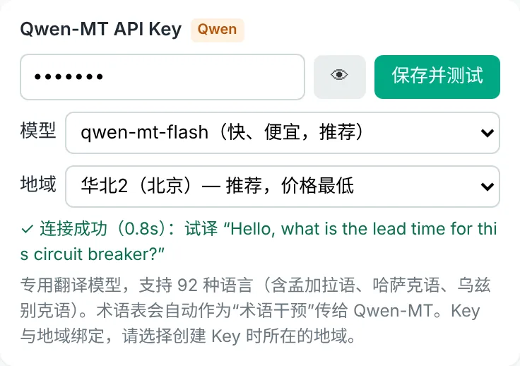
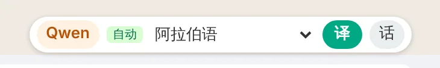

安装教程Install guide
TradeLingo 还没有上架 Chrome 应用商店，需要用浏览器自带的“开发者模式”手动加载。不用写代码，照着下面做，大约 5 分钟。TradeLingo isn't on the Chrome Web Store yet, so you load it with the browser's built-in Developer mode. No coding, about 5 minutes.
- 一台电脑A computerWindows 或 Mac，装有 Chrome 或 Edge。手机上不能用。Windows or Mac with Chrome or Edge. It doesn't work on phones.
- WhatsApp 网页版WhatsApp Web能在浏览器里打开 web.whatsapp.com 并登录。You can open and sign in to web.whatsapp.com.
- 至少一个 API KeyAt least one API keyDeepL、Qwen-MT 或 DeepSeek，去哪申请。DeepL, Qwen-MT or DeepSeek. Where to get one.
下载并解压Download and unzip
- 点下面的按钮，下载得到
tradelingo-main.zip。Click the button below to downloadtradelingo-main.zip. - 解压：Windows 右键压缩包，选“全部解压缩”；Mac 双击压缩包。Unzip it: on Windows, right-click and choose Extract All; on Mac, double-click it.
- 打开解压出来的
tradelingo-main文件夹，里面的extension文件夹就是插件。Open thetradelingo-mainfolder. Theextensionfolder inside is the extension. - 把
extension文件夹移到一个固定位置，例如D:\Tools\tradelingo。Move theextensionfolder somewhere permanent, for exampleD:\Tools\tradelingo.
示意图：解压后的文件夹Illustration: the unzipped folder
打开扩展程序页面，开启开发者模式Open the extensions page and turn on Developer mode
-
在 Chrome 地址栏输入下面这行，按回车。网页上的链接打不开这个页面，请复制后粘贴到地址栏。Type this into Chrome's address bar and press Enter. Links can't open this page, so copy and paste it.
chrome://extensions - 打开页面右上角的“开发者模式”开关。Turn on the Developer mode switch at the top right.
示意图：开关在右上角，打开后左上方会多出一排按钮Illustration: the switch is at the top right; a row of buttons appears once it's on
加载插件Load the extension
- 点左上方的“加载已解压的扩展程序”。Click "Load unpacked" at the top left.
- 在弹出的窗口里选中
extension文件夹，点“选择文件夹”。选的是文件夹本身：点进去能看到manifest.json，说明选对了。In the window that opens, select theextensionfolder and click Select Folder. Pick the folder itself: if you can seemanifest.jsoninside, it's the right one. - 页面上出现 TradeLingo 卡片，就装好了。A TradeLingo card appears on the page. That's it.
- 点浏览器右上角的拼图图标，在 TradeLingo 旁边点图钉，把它固定到工具栏，以后打开设置更方便。Click the puzzle icon at the top right of the browser and pin TradeLingo to the toolbar so settings are one click away.
示意图：加载成功后出现的插件卡片Illustration: the extension card after loading
填写 API Key，刷新 WhatsAppAdd your API key and reload WhatsApp
- 点工具栏上的 TradeLingo 图标，打开设置页。Click the TradeLingo icon on the toolbar to open settings.
- 在对应引擎的卡片里粘贴 Key，点“保存并测试”。看到绿色的“连接成功”就可以了。Paste your key into the matching engine card and click 保存并测试 (Save & test). A green 连接成功 (connected) means it works.
- 刷新 WhatsApp 网页版（web.whatsapp.com）。安装或升级后都要刷新一次。Reload WhatsApp Web (web.whatsapp.com). Do this after every install or update.


试一下Try it
- 打开一个外国客户的聊天，消息下方会出现绿色的中文译文。Open a chat with a foreign customer: green Chinese translations appear under the messages.
- 输入框右上方会出现工具条：引擎、语言、“译”和“话”按钮。A toolbar appears above the message box: engine, language, and the 译 (translate) and 话 (phrases) buttons.
- 想用跟进提醒：在设置页“跟进提醒”里点“发送测试通知”。没有弹出的话，在系统通知设置里允许 Chrome（或 Edge）发送通知。For reminders, click 发送测试通知 (send test notification) in settings. If nothing pops up, allow Chrome (or Edge) to send notifications in your system settings.


每个按钮的详细用法见图文说明书。For every button in detail, see the illustrated manual (Chinese).
用 Edge 浏览器Using Microsoft Edge
步骤和 Chrome 一样，只有第 2、3 步的位置和名字不同：Same steps as Chrome; only steps 2 and 3 look different:
-
在地址栏粘贴下面这行，按回车：Paste this into the address bar and press Enter:
edge://extensions - 打开左侧的“开发人员模式”开关。Turn on Developer mode in the left sidebar.
- 点“加载解压缩的扩展”，选择
extension文件夹。Click "Load unpacked" and choose theextensionfolder.
升级到新版本Updating to a new version
升级不会清除你填好的 Key、术语表、话术和客户语言记录，前提是覆盖同一个文件夹。Updating keeps your keys, glossary, phrases and per-chat languages, as long as you overwrite the same folder.
- 重新下载 ZIP 并解压。Download the ZIP again and unzip it.
- 把新
extension文件夹里的所有文件，复制到你原来的插件文件夹里，选择“替换”。Copy everything inside the newextensionfolder into your existing folder and choose Replace. - 打开
chrome://extensions，在 TradeLingo 卡片上点刷新按钮 ⟳。Openchrome://extensionsand click ⟳ on the TradeLingo card. - 刷新 WhatsApp 网页。跳过这一步，页面会提示“插件已更新或重载，请刷新 WhatsApp 页面”。Reload WhatsApp Web. If you skip this, the page will remind you to reload.
每个版本改了什么，见更新记录。See the changelog for what changed in each version.
换电脑或重装Moving to another computer
作战卡、话术、术语表和客户语言记录只保存在这台电脑的浏览器里。换电脑、换浏览器或重装前，在设置页“备份与恢复”导出一个 JSON 文件，到新环境装好插件后导入即可，导入时与现有数据合并。API Key 默认不导出；勾选“包含 API Key”的话，请妥善保管这个文件。Battle cards, phrases, glossary and per-chat languages live only in this browser. Before switching computers or browsers, export a JSON file from Backup and restore in settings, then import it after installing on the new one; imports merge with existing data. API keys are not exported unless you tick the option; if you do, keep the file private.
装不上或没反应If something doesn't work
加载时提示“清单文件缺失或不可读取”"Manifest file is missing or unreadable"
选错了文件夹。要选的是 extension 文件夹本身，不是外层的 tradelingo-main，也不是压缩包。The wrong folder was selected. Choose the extension folder itself, not the outer tradelingo-main folder or the ZIP file.
找不到“加载已解压的扩展程序”按钮I can't find the "Load unpacked" button
先打开“开发者模式”开关（Chrome 在右上角，Edge 在左侧），按钮才会出现。公司电脑如果被管理员禁止了开发者模式，需要联系 IT。Turn on Developer mode first (top right in Chrome, left sidebar in Edge). On a managed work computer, an administrator may have disabled it; ask your IT team.
消息下面没有译文，工具条也不出现No translations and no toolbar
刷新 WhatsApp 网页；确认设置页里“启用插件”和“自动翻译收到的消息”已勾选，并且至少一个引擎测试成功。还不行的话，打开一个聊天按 Alt+Shift+D，把复制出的诊断信息（不含消息内容和电话）提交到 GitHub Issues。Reload WhatsApp Web, and check in settings that the extension and automatic translation are on and at least one engine passed its test. If it still fails, open a chat, press Alt+Shift+D and post the copied diagnostic info (no message text or phone numbers) in GitHub Issues.
DeepSeek 测试“连接卡住”或“响应超时”DeepSeek test hangs or times out
看测试卡在哪一步。第 1 步失败，通常是 VPN 或代理把流量绕到了国外，可以把 deepseek.com 设为直连；第 2 步失败，多半是 DeepSeek 服务器繁忙，可以到 status.deepseek.com 查看。Check which step fails. Step 1 usually means a VPN or proxy is routing the traffic abroad; set deepseek.com to connect directly. Step 2 usually means DeepSeek is busy; see status.deepseek.com.
提示账户欠费或余额不足"Account overdue" or "insufficient balance"
到对应平台充值即可。充值前，插件会自动改用其他已填 Key 的引擎。Top up on that provider's site. Until then, the extension switches to another engine that has a key.